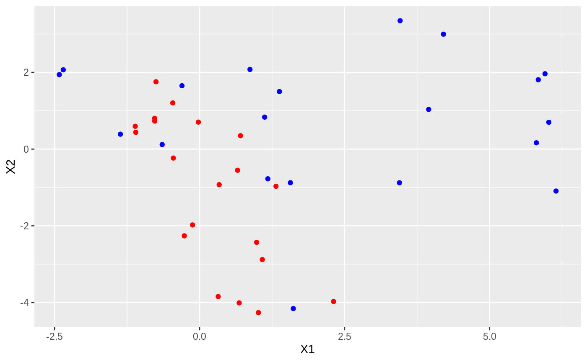
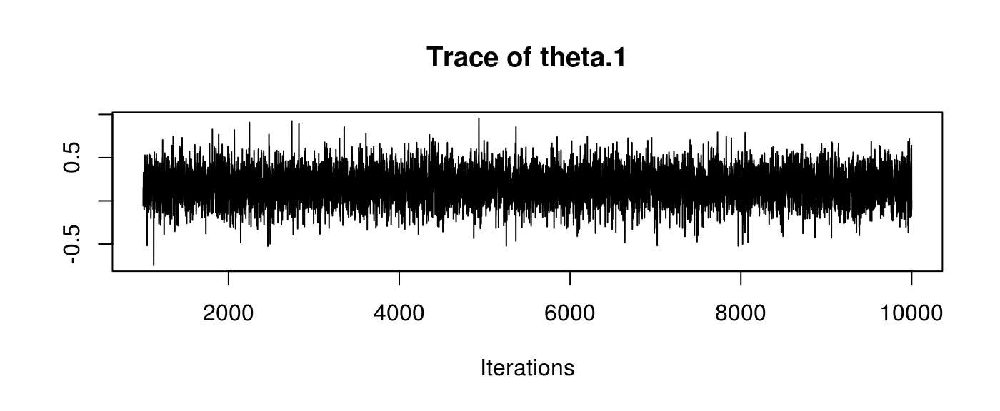
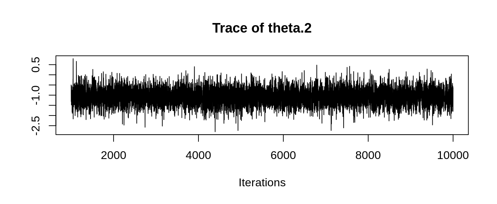
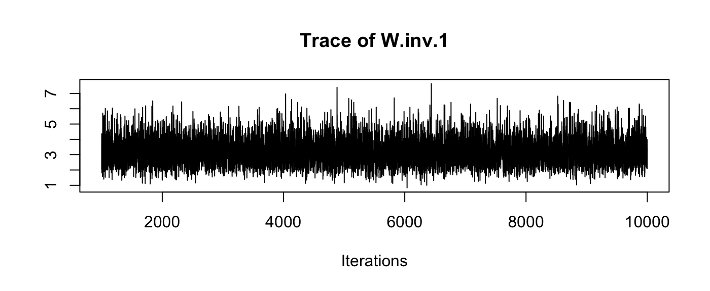
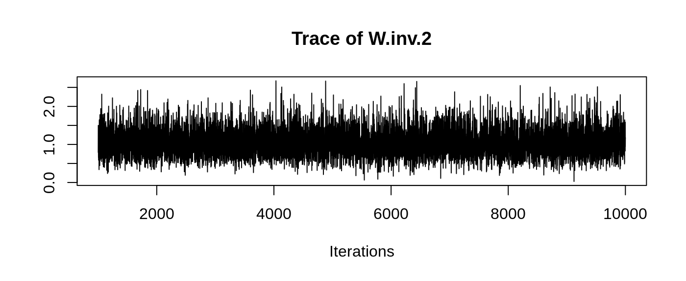
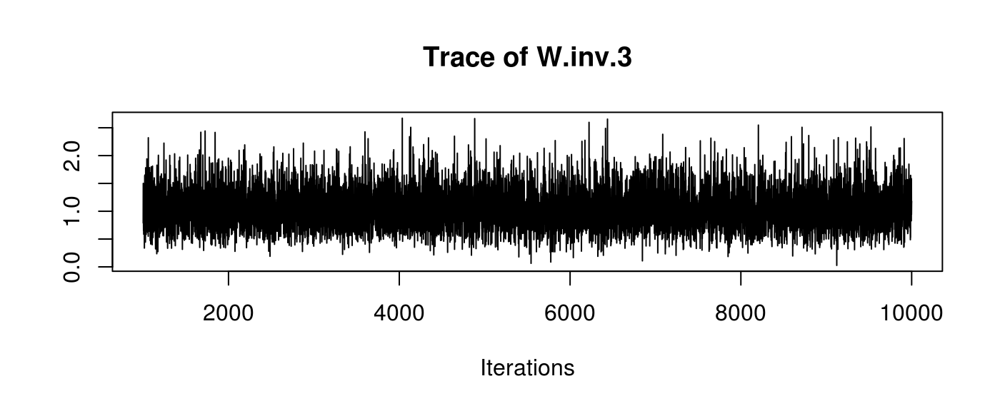
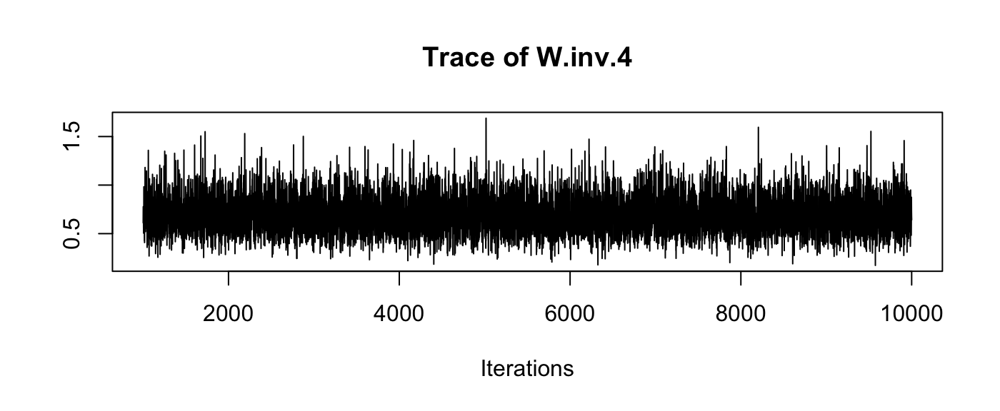

introduction.RmdThis vignette explains briefly how to use this package.
The package has been conceived to evaluate the hypothesis whether two sets of items (a reference set and a questioned set) belong to the same population or not.
Each item is described with a vector of \(p\) measurements.
The evaluation is performed using Bayesian statistics, particularly Gibbs sampling.
The model we applied is that these populations are represented as samples from Multivariate Gaussian distributions, with unknown means and covariance matrices.
Particular care has been given in order to obtain strongly performing functions. The main core is written using Rcpp.
For more theoretical details, see (Bozza et al. 2008).
This section describes the usage on some made-up data.
We create some dummy data, taken from two bivariate Gaussian distributions with known means and covariances. Covariance matrices are generated using the bundled rwish function, to obtain invertible matrices with ease.
set.seed(123)
p <- 2
mean.quest <- c(0, 0)
mean.ref <- c(2, 1)
cov.quest <- rwish(3, diag(2))
cov.ref <- rwish(5, diag(2))
n.quest <- 20
n.ref <- n.quest
df.quest <- data.frame(rmvnorm(n.quest, mean.quest, cov.quest))
df.ref <- data.frame(rmvnorm(n.ref, mean.ref, cov.ref))Here are the datasets:
## Registered S3 methods overwritten by 'ggplot2':
## method from
## [.quosures rlang
## c.quosures rlang
## print.quosures rlangggplot() +
geom_point(aes(x = X1, y = X2), col = 'red', data = df.quest) +
geom_point(aes(x = X1, y = X2), col = 'blue', data = df.ref)
It is clear that the two samples come from different populations, hence we expect a low likelihood-ratio value.
The package implements a two-sample Bayesian Hierarchical model with Gaussian multivariate likelihoods, and Inverse-Wishart prior on the covariance matrices.
The theoretical details are specified in (Bozza et al. 2008).
Let us recall the model definition.
We suppose to have background observations from a set of \(m\) populations.
We note with \(X_{ij}\) the \(j\)-th sample from the \(i\)-th population, \(i = 1, \ldots, m\). Each population is Multivariate Gaussian, with means \(\theta_i\), and covariances \(W_i\).
\[X_{ij} \; | \; \theta_i, \; W_i \sim \quad N_p(\theta_i, W_i) \quad \forall j = 1, \ldots, n \] \[\theta_i \; | \; \mu, B \sim \quad N_p(\mu, B)\] \[W_i \; | \; U, n_w \sim \quad IW(U, n_w)\]
where \(n_w > 2\,p\), and \(U\) is s.t. \[ E[W_i] = \frac{U}{n_w - 2(p + 1)} \] (parametrization according to (Press 2012)).
As the model is Bayesian, we are required to specify the hyperparameters \(\mu, B, U, n_w\), as well as the Gibbs chain initialization \(W_i\).
Notice that inference is propagated by supplying the inverses of covariance matrices, i.e. \(B^{-1}\) and \(W_i^{-1}\).
eps <- 0.1
B.inv <- eps*diag(p)
W.inv.1 <- eps*diag(p)
W.inv.2 <- eps*diag(p)
U <- eps*diag(p)
nw <- 2*(p + 1) + 1
mu <- (mean.quest + mean.ref)/2The package proves the function make_priors_and_init to supply these parameters based on a background dataset.
It returns a list containing estimates for \(\mu\), \(B^{-1}\), \(U\), the initialization for \(W_i^{-1}\), and the smallest possible \(n_w\) such that the matrices are invertible.
The package has been written to evaluate whether two sets of observations come from the same source (\(H_p\)) or not (\(H_d\)). Background information (the hyperparameters) is noted with letter \(I = \left\{\mu, B, U, n_w \right\}\).
We note with \(Y_{ij}\) the \(j\)-th sample from the \(i\)-th considered set, where \(i \in [\text{reference}, \text{questioned}]\).
Collectively, we shorten \(Y_i = \left\{ Y_{ij} \right\}_j\).
The Bayes Factor for this problem can be written as:
\[\text{BF} = \frac{ p(Y_{\text{reference}}, Y_{\text{questioned}} \mid I, H_p) }{p(Y_{\text{reference}}, Y_{\text{questioned}} \mid I, H_d)}\]
Notice that the numerator is a marginal likelihood:
\[p(Y_{\text{reference}}, Y_{\text{questioned}} \mid I, H_p) = \int p( Y_{\text{reference}}, Y_{\text{questioned}} \mid \theta, W ) p(\theta, W \mid \mu, B, U, n_w) \text{ d}\theta \text{ d}W \]
and the denominator is a product of marginal likelihoods:
\[ p(Y_{\text{reference}}, Y_{\text{questioned}} \mid I, H_d) = p(Y_{\text{reference}} \mid I, H_d) p(Y_{\text{questioned}} \mid I, H_d) = \left( \int p( Y_{\text{reference}} \mid \theta, W ) p(\theta, W \mid \mu, B, U, n_w) \text{ d}\theta \text{ d}W \right) \left( \int p( Y_{\text{questioned}} \mid \theta, W ) p(\theta, W \mid \mu, B, U, n_w) \text{ d}\theta \text{ d}W \right) \]
The marginal likelihood is computed with the function marginalLikelihood using (Chib 1995).
E.g. here we compute \(p(Y_{\text{questioned}} \mid I, H_d)\):
burn.in = 1000
n.iter = 10000
marginalLikelihood(as.matrix(df.quest), n.iter, B.inv, W.inv.1, U, nw, mu, burn.in, verbose = FALSE)
## [1] -80.5086the LR value can be computed as well, now considering two samples: (W.inv.2 is used only for chain initalisation)
samesource_C(as.matrix(df.quest), as.matrix(df.ref), n.iter, B.inv, W.inv.1, W.inv.2, U, nw, mu, burn.in, verbose = FALSE)
## [1] -8.670725Notice how low it is compared to a subset of original data:
The package supports the output of the entire chain for \(\theta_i\) and \(W^{-1}_i\) (i.e., the inverses of \(W_i\)).
At the time, this is possible only during the computation of a single marginal likelihood, in this case the one related to the sample from the questioned population.
results <- marginalLikelihood(as.matrix(df.quest), n.iter, B.inv, W.inv.1, U, nw, mu, burn.in, output.mcmc = TRUE)Notice that results now is a list, where results$value holds the marginal likelihood value, and results$mcmc is the coda object which holds the chain output.
## Markov Chain Monte Carlo (MCMC) output:
## Start = 1001
## End = 1005
## Thinning interval = 1
## theta.1 theta.2 W.inv.1 W.inv.2 W.inv.3 W.inv.4
## [1,] -0.05648638 -0.4982845 2.052814 0.7903736 0.7903736 0.6118947
## [2,] 0.15320595 -1.3119157 4.145302 1.5008868 1.5008868 0.7770089
## [3,] 0.06222307 -1.0049877 4.362410 1.3116315 1.3116315 0.7323424
## [4,] 0.12987014 -1.1137403 2.602908 0.8595322 0.8595322 0.6868988
## [5,] 0.32830751 -1.1711867 1.806805 0.6542523 0.6542523 0.5819349Remember that R is column-major: W.inv.1 is \(W^{-1}_1(1,1)\), W.inv.2 is \(W^{-1}_1(2,1)\) and so on.
Using standard coda tools, we can perform diagnostics, such as summaries:
##
## Iterations = 1001:10000
## Thinning interval = 1
## Number of chains = 1
## Sample size per chain = 9000
##
## 1. Empirical mean and standard deviation for each variable,
## plus standard error of the mean:
##
## Mean SD Naive SE Time-series SE
## theta.1 0.1738 0.1871 0.001972 0.001921
## theta.2 -1.0640 0.3995 0.004211 0.004132
## W.inv.1 3.1932 0.8870 0.009349 0.009645
## W.inv.2 1.0435 0.3576 0.003769 0.003848
## W.inv.3 1.0435 0.3576 0.003769 0.003848
## W.inv.4 0.6943 0.1926 0.002030 0.002069
##
## 2. Quantiles for each variable:
##
## 2.5% 25% 50% 75% 97.5%
## theta.1 -0.1968 0.04953 0.1751 0.2971 0.5403
## theta.2 -1.8445 -1.32592 -1.0621 -0.8020 -0.2678
## W.inv.1 1.7369 2.56198 3.1016 3.7443 5.1731
## W.inv.2 0.4429 0.78455 1.0140 1.2625 1.8406
## W.inv.3 0.4429 0.78455 1.0140 1.2625 1.8406
## W.inv.4 0.3647 0.55710 0.6783 0.8103 1.1113and traceplots:

We can recover the original matrices by hand, reshaping the desired columns (e.g. for W.inv) into a matrix/3D array:
n.samples <- nrow(results$mcmc)
W.inv.samples <- results$mcmc[, paste0('W.inv.', seq(1:(p^2)))]
head(W.inv.samples, 5)## Markov Chain Monte Carlo (MCMC) output:
## Start = 1001
## End = 1006
## Thinning interval = 1
## W.inv.1 W.inv.2 W.inv.3 W.inv.4
## [1,] 2.052814 0.7903736 0.7903736 0.6118947
## [2,] 4.145302 1.5008868 1.5008868 0.7770089
## [3,] 4.362410 1.3116315 1.3116315 0.7323424
## [4,] 2.602908 0.8595322 0.8595322 0.6868988
## [5,] 1.806805 0.6542523 0.6542523 0.5819349
## [6,] 3.343988 0.8641796 0.8641796 0.5048585## [1] 9000 2 2or using the supplied post-processing function mcmc_postproc:
list.postproc <- mcmc_postproc(results$mcmc, compute.ML = TRUE, cumulative = TRUE)
str(list.postproc$theta.samples)## 'mcmc' num [1:9000, 1:2] -0.0565 0.1532 0.0622 0.1299 0.3283 ...
## - attr(*, "dimnames")=List of 2
## ..$ : NULL
## ..$ : chr [1:2] "theta.1" "theta.2"
## - attr(*, "mcpar")= num [1:3] 1001 10000 1## num [1:9000, 1:2, 1:2] 0.969 0.802 0.497 0.655 0.933 ...It also allows for easy computation of posterior point estimators:
## [1] 0.1737589 -1.0640160## [,1] [,2]
## [1,] 0.6960182 -1.047082
## [2,] -1.0470818 3.205011Bozza, Silvia, Franco Taroni, Raymond Marquis, and Matthieu Schmittbuhl. 2008. “Probabilistic Evaluation of Handwriting Evidence: Likelihood Ratio for Authorship.” Journal of the Royal Statistical Society: Series C (Applied Statistics) 57 (3): 329–41. https://doi.org/10.1111/j.1467-9876.2007.00616.x.
Chib, Siddhartha. 1995. “Marginal Likelihood from the Gibbs Output.” Journal of the American Statistical Association 90 (432): 1313–21. http://amstat.tandfonline.com/doi/abs/10.1080/01621459.1995.10476635.
Press, S James. 2012. Applied Multivariate Analysis: Using Bayesian and Frequentist Methods of Inference. Courier Corporation.